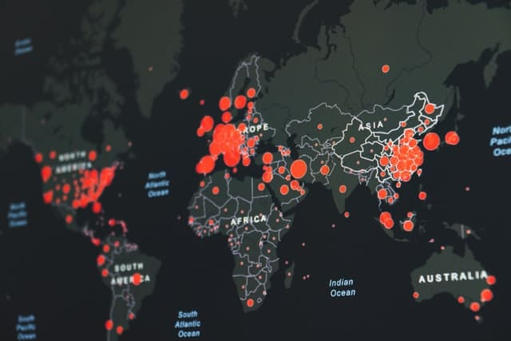

Fábrica de Felicidade - 2022
Integração de Colaboradores
Por Shin em
Integração de Colaboradores
O sonho de toda empresa é ter bons talentos para obter excelentes resultados.
Então, começa uma busca incessante pelas melhores pessoas no mercado para somar ao time. Eis que o objetivo é alcançado. Então, você acha que a tarefa já foi cumprida. Será que realmente esta tarefa foi concluída com sucesso?
Se a sua resposta for afirmativa, pode ser um dos motivos de tanto ouvir por aí sobre alto índice de turnover, funcionários insatisfeitos, absenteísmo, presenteismo, enfim, a dificuldade em reter talentos nas empresas.
Uma pessoa ao ser contratada em uma empresa, é um sinal de mudança na vida da pessoa. E toda mudança tem o seu peso. Surge então a importância de se fazer uma excelente integração de pessoas.
Uma analogia a integração de colaboradores
Para clarear este pensamento, vamos imaginar a seguinte situação:
Imagine seu melhor amigo lhe chamando para passar o Réveillon com a família dele. Ele diz que todos são super animados e você acaba topando. Eis que chega 31 de dezembro. Você já receoso, vai até a casa dessa família. Chegando lá, você é atendido por um estranho. É o primo do seu melhor amigo.
Os dois embaraçados com a situação, você pergunta sobre o amigo e entra. Passada toda a farra já no dia 1 pela manhã, você percebe que ficou o tempo todo de canto e foi um desastre. A vontade de ir embora é enorme. E se houver oportunidade, nunca mais voltará nessa casa.
Agora, de volta ao mundo corporativo. Essa situação chata contada é uma analogia ao que acontece na integração de colaboradores nas empresas. Todos se conhecem, menos quem está chegando. Então, a força para descontentar-se logo de cara é grande. O papel do RH é ater-se a uma estratégia que quebre essa barreira inicial e receba os novos colaboradores de forma que sintam-se à vontade para que assim, rendam o máximo e com satisfação.
Como a grande maioria das integrações já são desastrosas ou inexistentes nas corporações atualmente, fazer este processo de forma cativante é uma oportunidade incrível para obter vantagem num mercado onde, graças à internet, estamos concorrendo mundialmente a cada vaga.
O mínimo a se fazer na integração: mostrar pontos relevantes da empresa e colaboradores.
A apresentação das tarefas, pode ser feita naturalmente caso haja um bom clima organizacional, que também é construído com uma boa integração.
Quando os colaboradores entendem que tudo flui melhor se todos se ajudarem, além dos resultados melhorarem como um todo, o trabalho torna-se gratificante. Dá um orgulho sincero trabalhar nessa empresa.
Fábrica de Felicidade
A Fábrica de Felicidade te auxilia a realizar uma integração inesquecível para os colaboradores. É sobre gerar conexões positivas no cérebro associando felicidade à empresa logo na chegada. E o resultado disso é sensacional.
Esta energia positiva é o que há de mais moderno no meio corporativo para reter talentos. É criar uma cultura que diminui o stress, consequentemente, menos burnout. Menos absenteísmo, menos presenteismo. Funcionários jogando no mesmo time, todos focando no mesmo objetivo. Melhor clima organizacional. Aumento substancial de performance, vendas, criatividade, qualidade.

Filosofia Fábrica de Felicidade
A Fábrica de Felicidade tem um diferencial que você certamente nunca viu pois somos pionieros nesse tema: seguimos a filosofia de que o cliente escolhe o nosso preço. A gratidão é um dos pilares da felicidade e seguimos nessa luta.
Um forte abraço e gratidão pela leitura. 😉